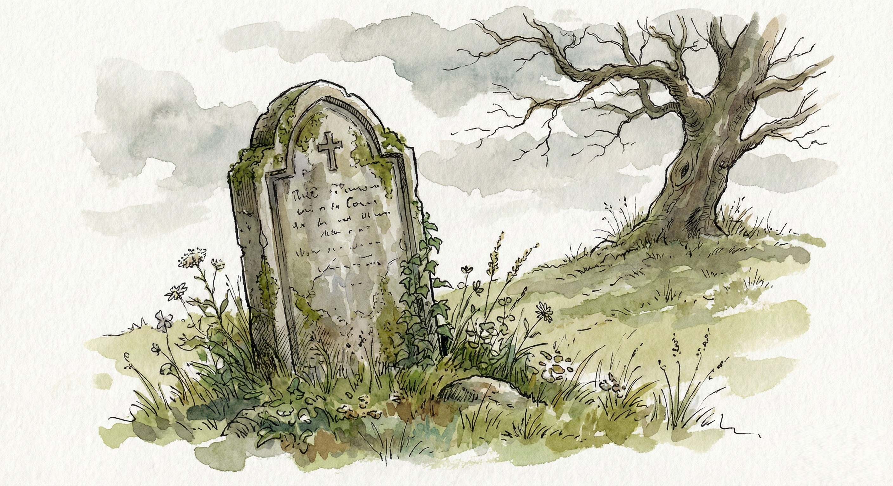
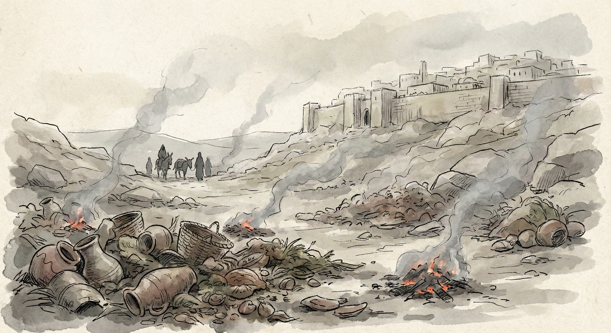
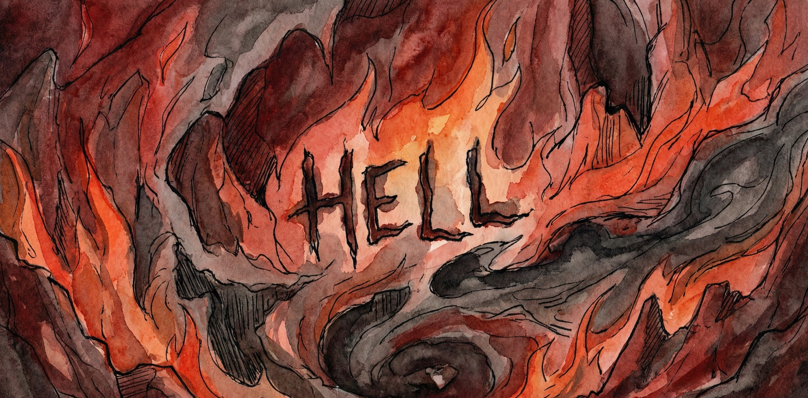
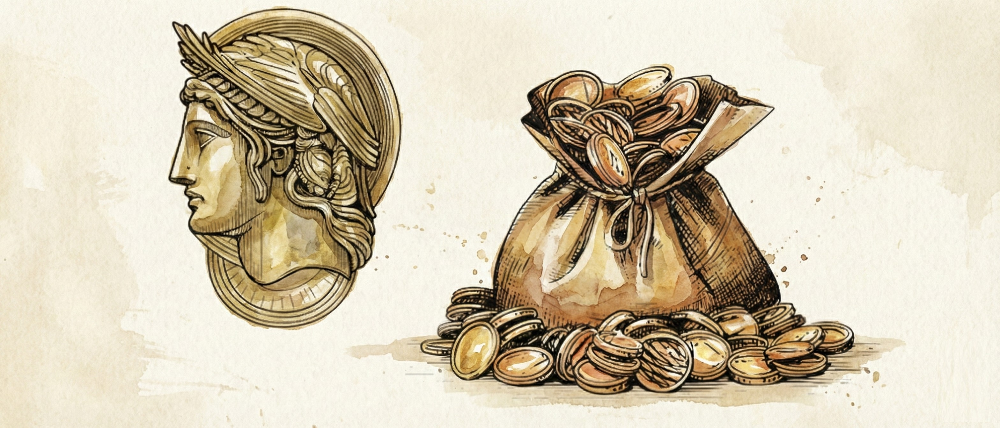

Chapter 1: The Invention of Eternal Fire
"If I make my bed in Sheol, behold, You are there." — Psalm 139
No child ever imagines eternal flames.
They have to be taught to.
Usually it starts with a preacher's voice and a few trembling Bible verses - "where their worm dieth not, and the fire is not quenched." Then come the pictures, the sermons, the whispered warnings about what happens to "the unsaved."
Fear doesn't just creep in; it becomes holy.
Parents call it love because they think it saves souls.
But love never needed flames to get its message across.
If you open a Hebrew scroll, long before the word hell existed, you find something quieter: SHEOL.
No fire.
No screaming.
No pitchforks.
Just the grave: the shadowy realm of the dead, the same for kings and beggars alike.
Jacob said he would go down to Sheol mourning for his son. Job begged for Sheol as rest from pain. David wrote, "If I make my bed in Sheol, behold, You are there."
It was a place of silence, not torment.
More hospice than furnace, offering rest and freedom from pain.
The idea that God burns His enemies forever would have been unthinkable to the Hebrews who wrote those lines.
The Shift: From Valley to Volcano
Outside ancient Jerusalem was a valley named Ge Hinnom, or Gehenna.
It had a dark reputation. In the days of certain kings, children had been sacrificed there [some say to Molech... others say as 'Moloch' sacrifices to Yahweh! Numerous Old Testament verses make it very clear these child sacrifices were to Yahweh! For evidence of this, check out "Liberating Humanity: How Jesus Exposed The Evil God Of Moses And Warned Of Paul".] By Jesus' time it had become a waste dump where fires smoldered to consume the refuse of the city: a living metaphor for corruption and decay.
So when Jesus warned religious leaders about being "in danger of Gehenna," His hearers didn't picture an underworld dungeon. They pictured that valley: smoldering, foul, and visible from their city walls.
He was talking about consequences on earth: the spiritual rot that would eventually consume the nation if it clung to hypocrisy and violence.
The fire was real, but local.
Moral, not metaphysical.
How the Word "Hell" Was Born
Centuries later, translators faced a problem.
Greek manuscripts used three different words: HADES, GEHENNA, and TARTARUS, each with distinct meaning. The Latin Vulgate flattened them into infernum, and the English translators followed suit with a single, convenient word: HELL.
One word to rule them all.
One word to terrify them all.
It was efficient, and disastrous.
The valley outside Jerusalem (Gehenna), the neutral grave (Sheol), and a Greek mythological prison (Hades) were suddenly merged into one eternal furnace.
The misstep stuck because fear sells. It builds cathedrals faster than compassion does.
These mistranslation errors and textual alterations have resulted in beliefs like the one about God versus Satan:
Satan is more powerful than God, as Satan eventually tricks most of humanity into joining him in "Hell", leaving God to be content with a significantly smaller, fun-challenged minority.
God created billions of people, but resigns Himself to settling for a small minority while watching on as a very shrewd and successful devil called Satan snatches most of His beloved creation from under His nose.
Not that God doesn't make a sincere attempt to try to save everyone. He gives it His best shot, make no mistake. However, ultimately, judging by the numbers, you'd have to say that He fails.
According to this myth, God is not the sharpest strategist, particularly if He can see into the future. I can picture God shrugging His shoulders and sheepishly admitting, in a tone not unlike Morgan Freeman…
"I chose to give mankind freedom of choice, so I must live with the consequences. My enemy might have beaten me hands down on the quantity front, but I guess I got the quality ones: those wise enough and spiritually alert enough to make the right decision before they died. To be honest, I do wish more people had chosen Me. However, as I always say to Gabriel, I must respect their decisions, even if it means living with being the loser to Satan for a very long time. OK, FOREVER! I should have devised a different plan. Maybe next time. Oh, dear! There is no next time, is there?"
If we take this myth to its logical conclusion, God is either an enormous failure whose great plan for the universe wasn't so great after all. Or He has a heart of stone, choosing to go ahead and create humans while knowing that most won't do the right thing, either through rebellion or ignorance. He does this creating with a crystal-clear, big-screen view of the indescribable, endless horrors that will be their fate. Then He steps back, looks at what He's made, and pronounces it "good"! I don't know about you, but I'm struggling to read His facial expression at this point. Are the corners of His mouth curled up or down?
This myth flows into another much-preached myth, this one about Adam versus Christ:
Adam destroys more humans than Christ manages to save, making Adam more powerful than Christ.
With this untruth, Adam single-handedly (with a little help from Eve and a snake) dooms more people to lives of misery and eventual never-ending torture than Christ manages to save. Adam is thus considerably more powerful and effective than Christ and thus God.
Think about that for a moment.
Adam drags billions of human beings down. Christ manages to pull up only a few million, if that.

Of course, that's not what you'll hear in church meetings or if you talk to most Christians. They'll tell you that God is a "perfect gentleman" who's so fair and just that He stands back and lets each of us humans decide our own fate without being so horribly rude as to interfere. He exercises this amazing restraint even when He clearly sees us stumble around in spiritual darkness, completely blind, with computer chips inserted into our brains at birth that program us to obey an "evil boss", our "sin nature." God's attitude is the following:
"As much as I love you like you can't imagine, my deepest desire is that you make the right, wise, intelligent, sensible choice, which shows spiritual discernment, and prevent yourself from being toasted forever. If you happen to belong to a primitive tribe living in East Borneo, I really hope the missionaries from the Western world will get to you with the gospel in time. But if not, you'll still have no excuse because there's enough in creation that spells out the gospel message quite clearly. If you had an ounce of sense, an amazing sunset should reduce you to your knees in repentance. Admittedly, it would have been easier for you if you were born in the West."
If these myths were true, it would have been much more cost-effective from a time and energy point of view if God simply set fire to most of His creation from the outset and handed the crown to Satan and Adam.
Scandalous? I agree!
If I were God, I would take legal action against 99 percent of the preachers out there. This is the ultimate defamation of the ultimate character!
The good news is that God is incredibly patient with those who are currently making Him out to be a dim-witted, heartless, sadistic monster. He's even incredibly patient with most preachers of the "good news." I know that because He was (and still is) amazingly patient with me. I sincerely believed and preached these oddities for a significant part of my life.
Up until a few years ago, I believed these myths were founded squarely on the Bible. Yet the Scriptures themselves destroy fantasies and fiction.
When Fear Became Theology
By the third century, Christianity had shifted from an underground movement of love to an imperial religion that needed control.
Empires govern by threat, not tenderness.
So when church fathers described "the eternal fire prepared for the wicked," the image served a purpose. It made the empire's God look like a stricter Caesar. It also ensured that ordinary believers stayed obedient - if not to God, then at least to the clergy who claimed to represent Him.
A faith born in the language of freedom had been recast in the grammar of fear.
Jesus had set people free from temple taxes and sacrificial systems.
Now new priests were collecting insurance payments against an afterlife inferno.
The Seduction of the Flame
It's strange how easily terror disguises itself as truth.
People told themselves the doctrine of hell was righteous because it "kept people moral."
But it didn't. It only made them afraid ... afraid of questioning, afraid of dying, afraid of God Himself.
When you believe God tortures forever, you stop seeing Him as Father and start seeing Him as warden.
Love becomes obligation. Worship becomes negotiation. Prayer becomes panic.
And yet, even here, the voice of Jesus cuts through like cool water:
"The Father judges no one."
"Love your enemies."
"I don't call down fire on those who reject me. And anyone who does is motivated by a spirit different to mine" Jesus said this after the Samaritans rejected him and would not have him enter their village. Two of Jesus' disciples wanted him to rain down fire on those Samaritans. (Luke 9:54-56)
How could the same teacher who told us to forgive seventy times seven endorse a deity who forgives once and then burns forever?
The Forgotten Fire
Jesus did speak of fire, but not as punishment.
When He said, "Everyone will be salted with fire," He meant purification, not damnation.
When He said, "I came to bring fire on the earth," He spoke of awakening: the blaze of divine truth that consumes lies.
The fire of Jesus reveals; it doesn't destroy.
It burns away hypocrisy, exposes greed, melts pride, and forges mercy.
In His stories, fire is never the weapon of an offended deity.
It's the warmth of transformation: the same light that turned a tax collector into a disciple, and the same light that still burns through every soul brave enough to face truth.
The Real Hellfire
The real hellfire wasn't beneath the earth.
It was the fear inside believers: the inherited terror that made them doubt love itself.
For centuries, that inner fire has done far more damage than any literal flame could.
It has burned through families, pulpits, and hearts, convincing millions that safety means submission and that freedom is dangerous.
But once you begin to see Jesus clearly, the smoke starts to clear.
The fire of love and the fire of fear cannot coexist.
One will always consume the other.
And love ... true, self-emptying love ... is the hotter flame.
Hell, as eternal torture, was invented.
Born from mistranslation, political convenience, and the human need to control through fear.
Jesus' words were co-opted, His metaphors literalized, His Father misrepresented.
The next chapters will trace how that misunderstanding hardened into dogma ... and how Jesus' own message can still set us free from it.
The flames we've feared all our lives were never meant to scare us into heaven.
They were meant to burn away the lies that kept us from seeing heaven already within.